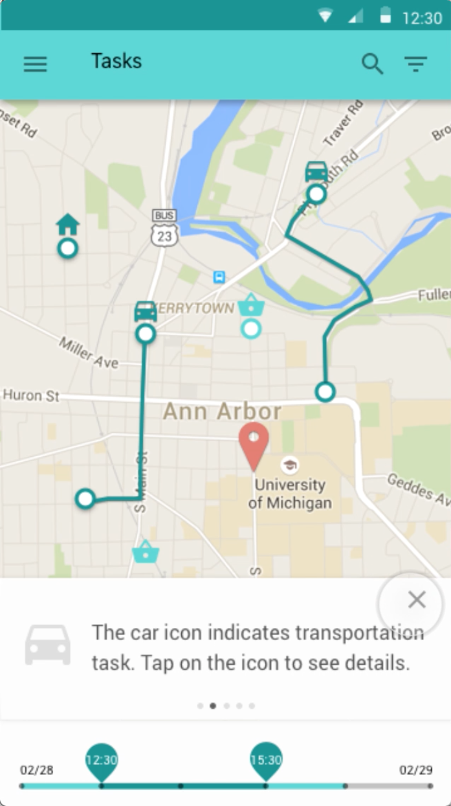
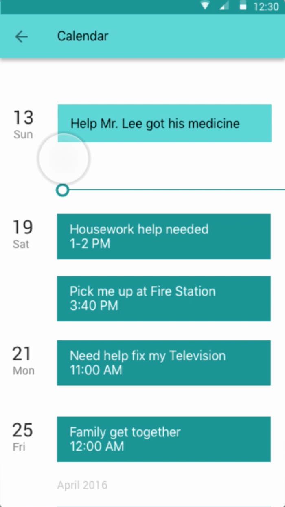

-
Filter the task directly on screen
One big concern from many users is it is really hard for them to keep track of the tasks, since the control of time intervial is seperated from the map, the shift from filter panel and the map causes change blindness. Since the control of time period is such a frequent function, I put it directly on the same panel with the map. Which makes it much easier for user to select.
 -
Use bottom sheet to show
task detailsAnother design decision is instead of bringing user to a brandnew task page, I use the "bottom sheet" to display the detail of the task once user choose it. Which avoid the trouble for user to go back to maps if they want to see other tasks.
-
Emphasis the most recent tasks
One thing I learnt from user testing is people are more focus on the events that would happen in recent week, instead of the ones will happen in a month. So instead of making a calendar, I use a list to display just the most urgent voluntary tasks.
